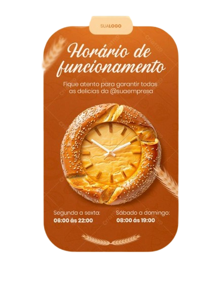
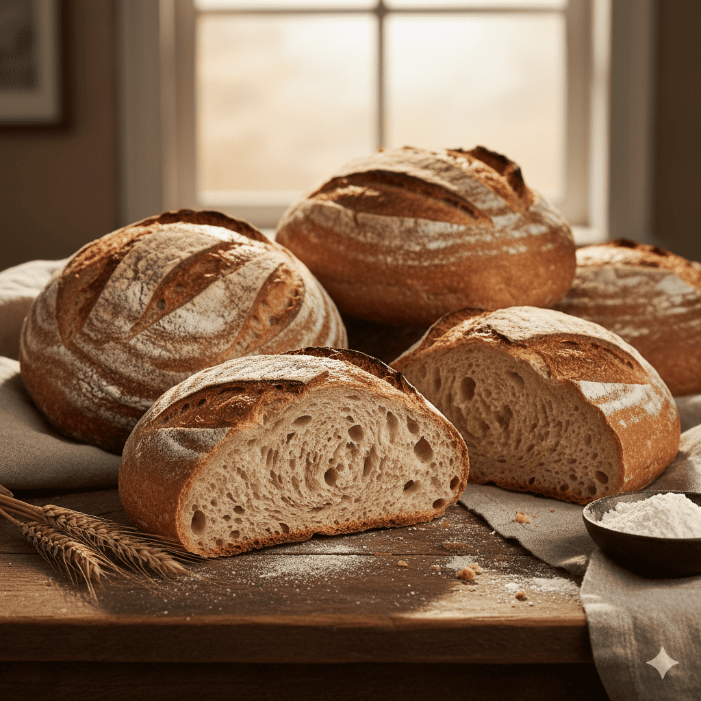
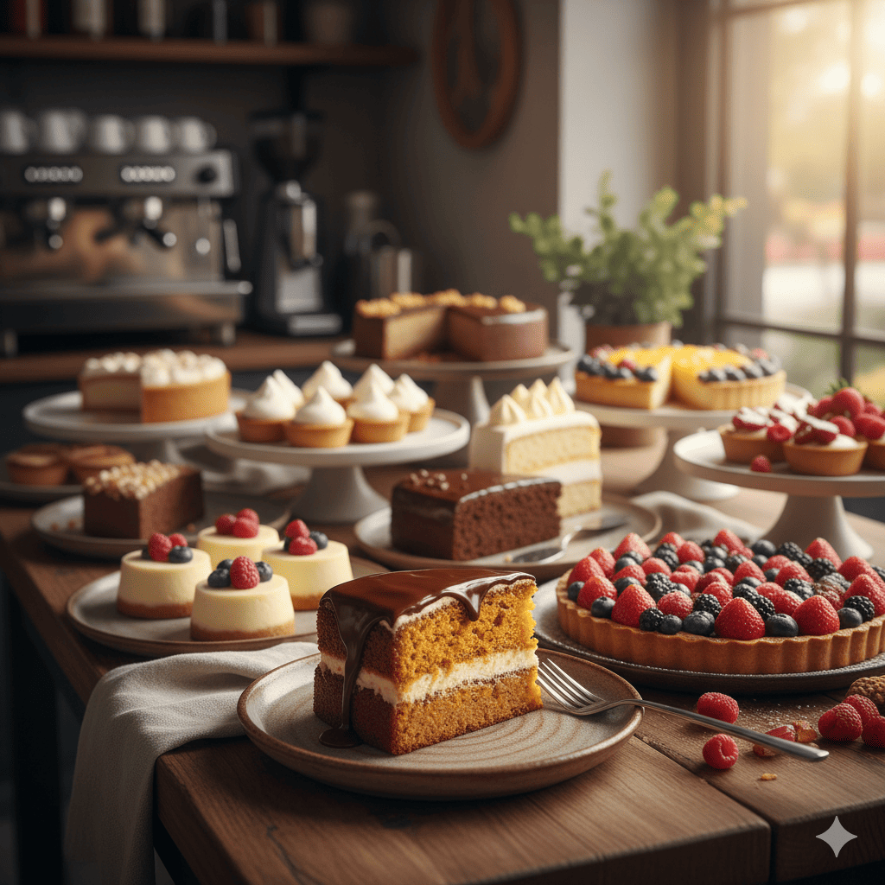
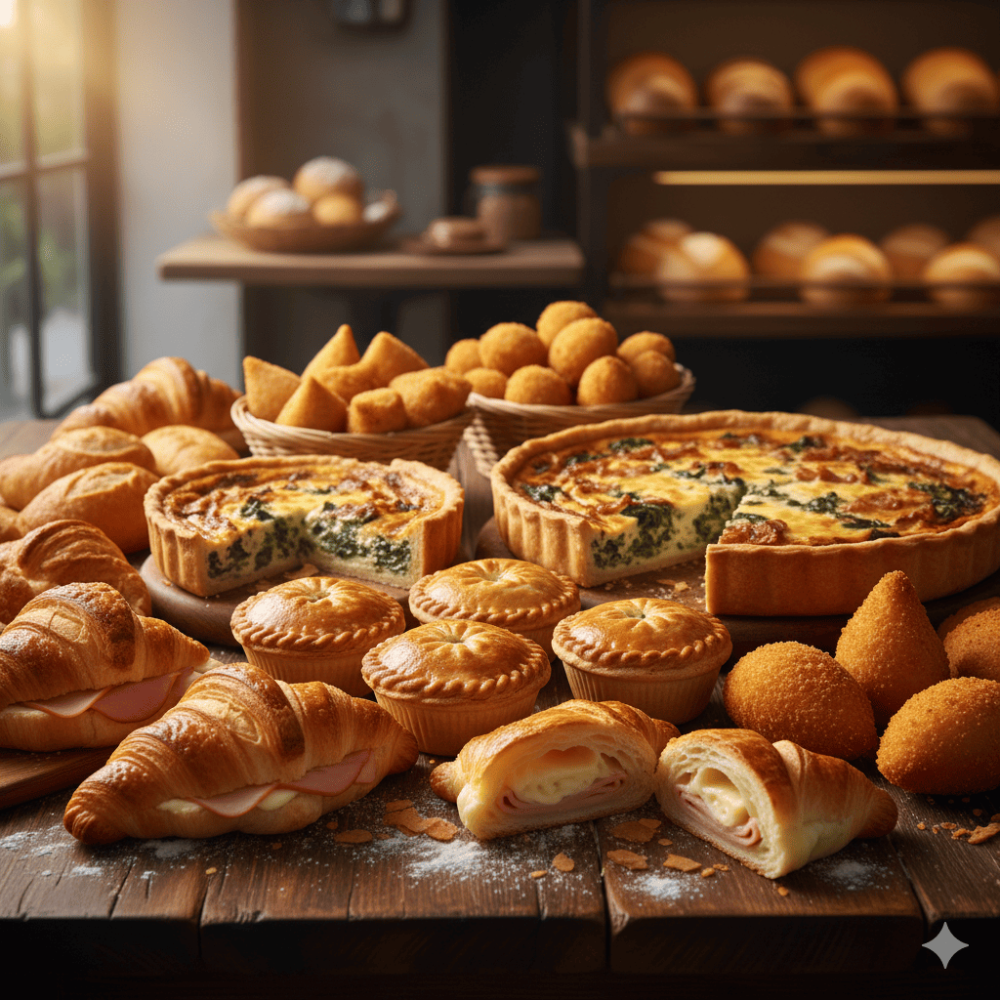
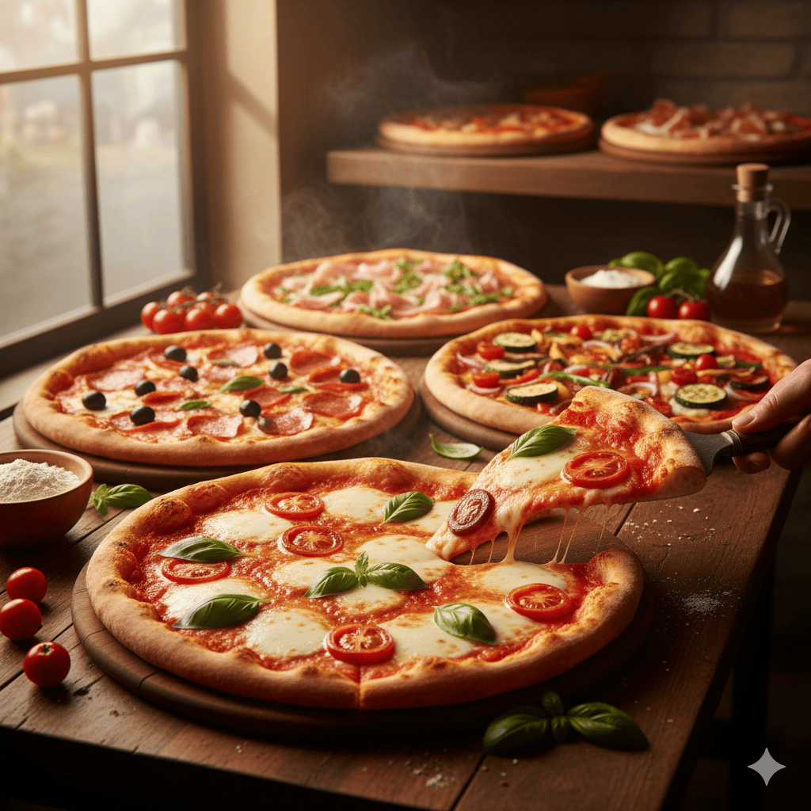
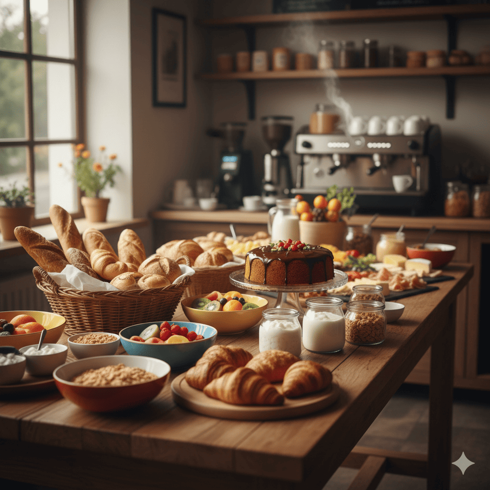

Nossa História
Desde cedo, a cozinha foi o palco principal da vida da pequena família Almeida. Ainda menino, João gostava de observar sua avó preparar os pães que enchiam a casa com um aroma inconfundível. Com o tempo, aquela curiosidade de criança transformou-se em paixão.
Aos 14 anos, João já acordava antes do sol nascer para preparar os primeiros pães do dia, sempre com o mesmo carinho que via em sua avó. O que começou como lembrança da infância se tornou um ofício de vida, passando de geração em geração e mantendo viva a essência do sabor caseiro.
Hoje, cada pão saindo do forno não é apenas alimento, mas também uma história de amor pela tradição, respeito pelo trabalho artesanal e a alegria de compartilhar momentos em torno da mesa. Entre uma fornada e outra, ele aprendia que paciência e dedicação eram os segredos do pão perfeito.
Missão
Oferecer pães e produtos de panificação feitos com dedicação artesanal, preservando o sabor da tradição e proporcionando momentos de aconchego e felicidade para cada cliente.
Visão
Ser reconhecida como referência em panificação artesanal, mantendo viva a herança familiar e expandindo nossa paixão pelo pão de qualidade para cada vez mais pessoas e gerações.
Valores
Ser reconhecida como referência em panificação artesanal, mantendo viva a herança familiar e expandindo nossa paixão pelo pão de qualidade para cada vez mais pessoas e gerações.
Atendimento
✨ Nossos Diferenciais
- 🥖 Receitas artesanais: produzimos pães e doces seguindo técnicas tradicionais, com aquele sabor único de casa.
- 🔥 Produtos sempre fresquinhos: fornadas diárias garantem qualidade e aroma irresistível.
- 👨👩👧👦 Herança familiar: um legado de gerações apaixonadas pela panificação.
- 🍰 Variedade de produtos: pães, bolos, biscoitos, bolachas e muito mais para todos os gostos.
- ❤️ Carinho em cada detalhe: cada receita é feita com dedicação e respeito pelo cliente.
- ☕ Ambiente acolhedor: um espaço pensado para que cada visita seja um momento especial.
- 🌾 Valorização local: priorizamos ingredientes de qualidade e fornecedores da região.
Catálogo de Produtos
Bolo de chocolate
Delicioso bolo de chocolate com cobertura cremosa.
Bolo de Cenoura
Camadas suaves e delicada cobertura de chocolate.
Bolo de Milho
Macio, dourado e com aquele gostinho de fazenda que aquece o coração
Croissant
Camadas leves e crocantes de massa folhada que derretem na boca.
Pão de Quijo
Crocante por fora, macio por dentro e com aquele aroma irresistível de queijo derretendo.
Sonhos
Macio, leve e coberto com açúcar de confeiteiro, nosso sonho é pura nostalgia e sabor.
💬 Depoimentos dos nossos clientes
 |
 |
 |
📖 Catálogo de Produtos
| Imagem | Produto | Preço |
|---|---|---|
|  | Pão Artesanal Fresco Crocante por fora e macio por dentro. |
R$ 8,00 / unidade |
|  | Bolo Caseiro Sabor cenoura, fubá, chocolate e muito mais. |
A partir de R$ 20,00 |
|  | Salgados Variados Coxinhas, empadas, croissants e quiches. |
R$ 5,00 / unidade |
|  | Pizzas Artesanais Sabores tradicionais e especiais. |
A partir de R$ 35,00 |
|  | Buffet de Café da Manhã Completo com frutas, pães e bebidas. |
R$ 25,00 / pessoa |